Coulaines 2006

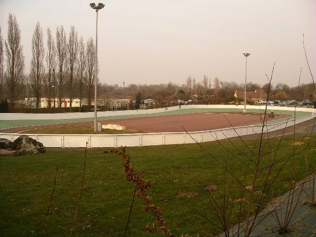
Premier outdoor de l'année, à Coulaines, à côté du Mans. Une grande salle de réception, 3 terrains de foot ou d'athlétisme malheureusement cachés l'un de l'autre, et... une piste de roller de vitesse mais c'est pas pour nous !

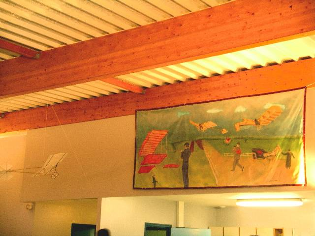
Jean-Claude a peint une grande toile pour honorer le thème "les débuts de l'aviation".

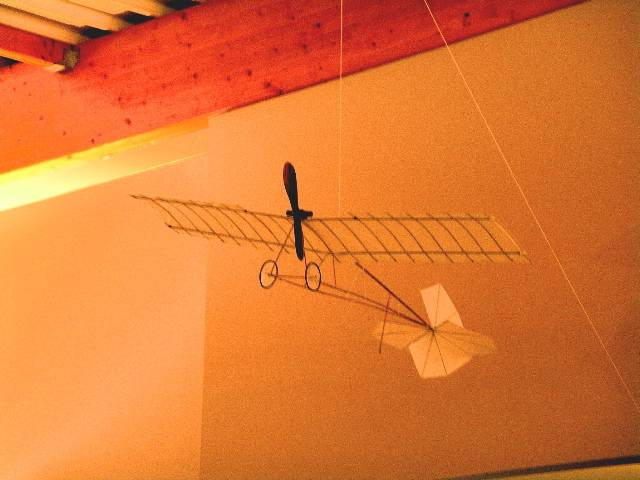
Moi, j'ai construit une "Demoiselle" de Santos-Dumont, un peu maquette, mais quand même cerf-volant ! Travail de spi et de bambou, assisté discrètement d'un peu de carbone et de plastiques divers pour les roues, l'hélice etc...

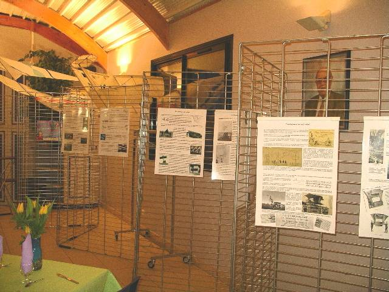
Les Mouchague ont monté une bonne part de leur exposition consacrée aux débuts de l'aviation et aux emplois des cerfs-volants, l'aérophotographie militaire surtout, dont les ascensions humaines ! A propos, si vous êtes intéressés, venez à Meudon les 1er et 2 juillet !

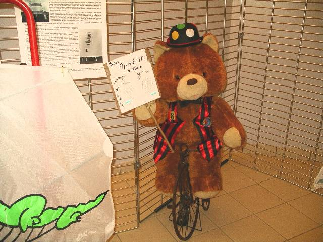
Dans un coin, Gaby a mis un nounours... monté évidemment sur un grand Bi, avec un menu d'époque qui en dit long sur les capacités d'absorption de nos aïeux...

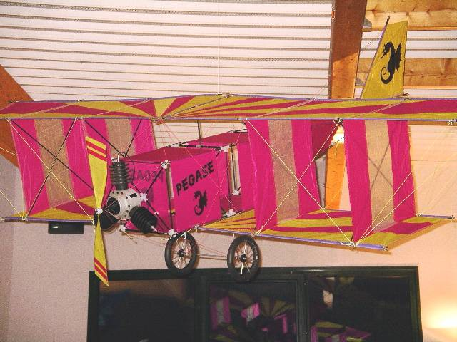
Au plafond, un autre avion, le Pégase, qui, par sa taille, préfigure sans doute Air France dont c'était le symbole pendant longtemps.

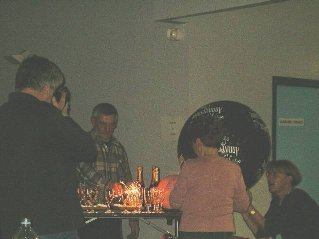
On a aussi fêté les 70 ans de quelqu'un dont je ne vous dirai pas le nom par galanterie (mais il est sur la photo)...

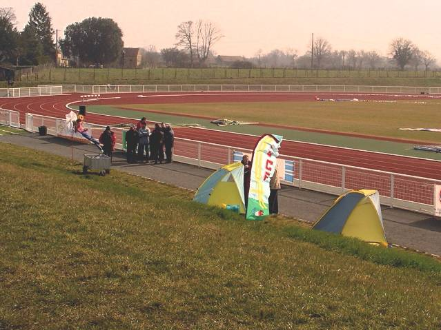
Samedi matin, vent et froid, l'occupation du terrain n'est pas forcenée... Les premières tentes se montent quand même...

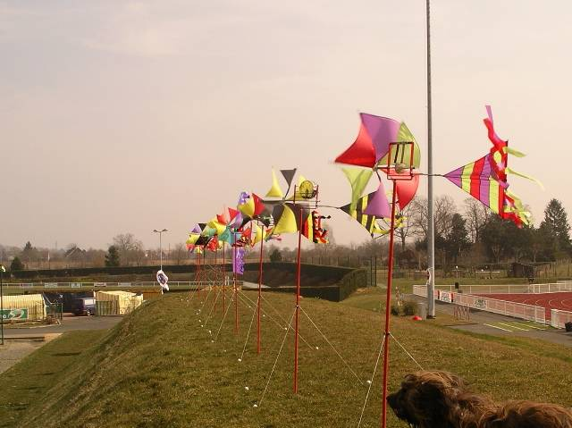
Joël a aligné ses moulins incontournables...

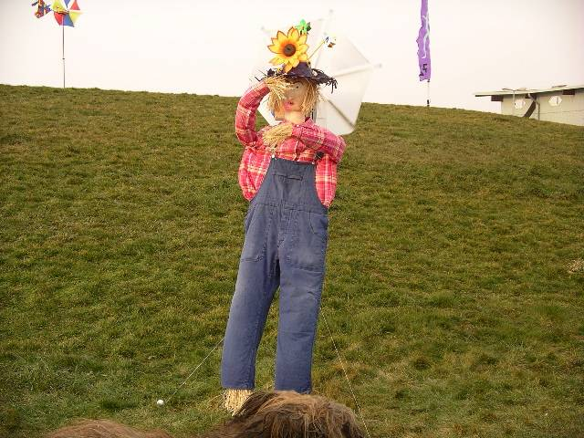
Il a aussi monté son épouvantail pour le concours JdV de Dieppe. Il reste un peu de mise au point à faire pour cet automate complexe qui lève le bras, souffle des bulles, et arrose les curieux !

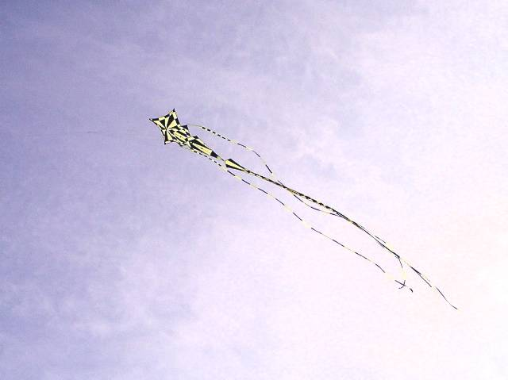
Mais les cerfs-volants montent avec des queues quelquefois impressionnantes...

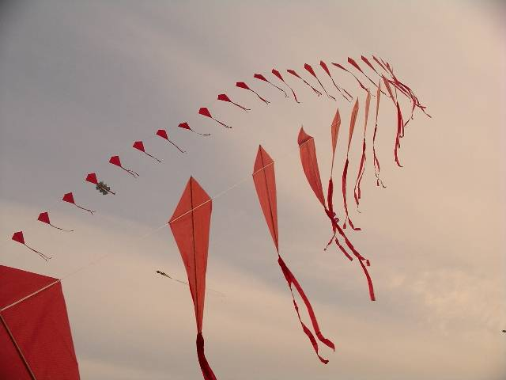
Des arches viennent aussi meubler le terrain d'athlétisme.

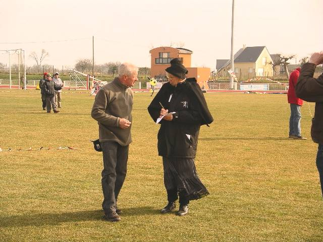
Josette le parcourt pour recueillir les photos du trombinoscope, en donnant des numéros qui serviront pour le gros lot...

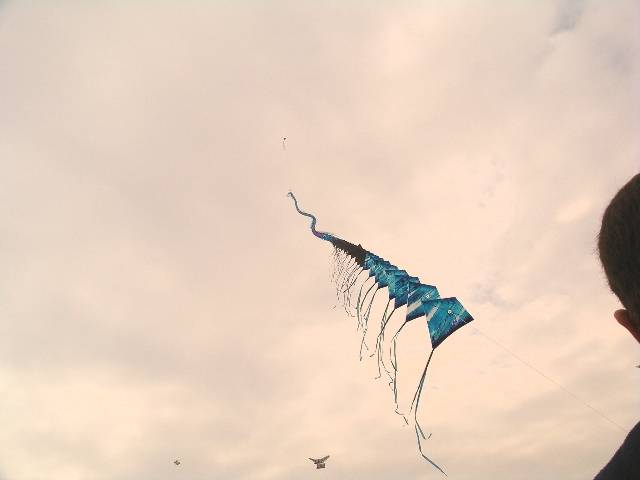
Un beau train bleu, de Michel Gressier je crois...

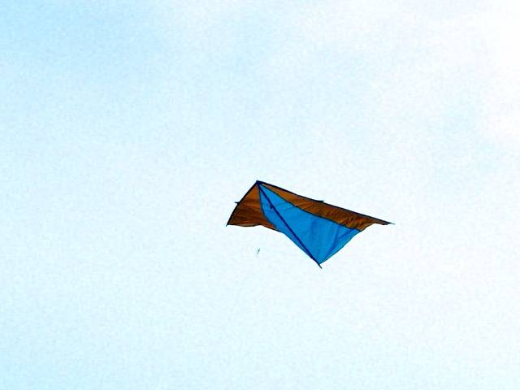
François a mis en l'air son delta vapeur qui ne bougera pas d'un poil de la journée ! Il est caractérisé par l'arrière arrondi du vapeur, et l'absence de quille : François dit qu'elle est plutôt nuisible, l'expérience semble lui donner raison...

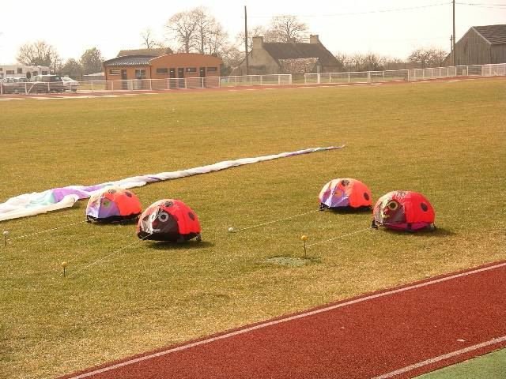
Au sol, les petites coccinelles se dandinent sur leurs p'tites pattes, génial !

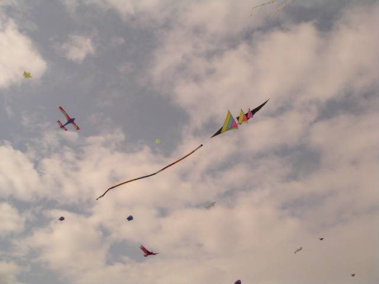
Et le ciel commence à bien se meubler.

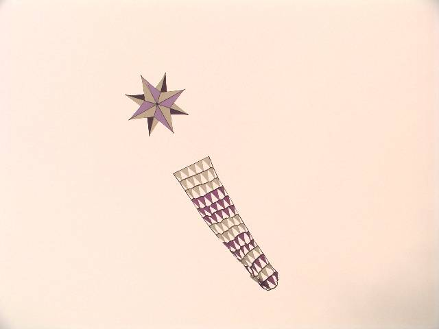
Une grande étoile mauve s'est levée à l'horizon, je ne sais pas qui est l'auteur...

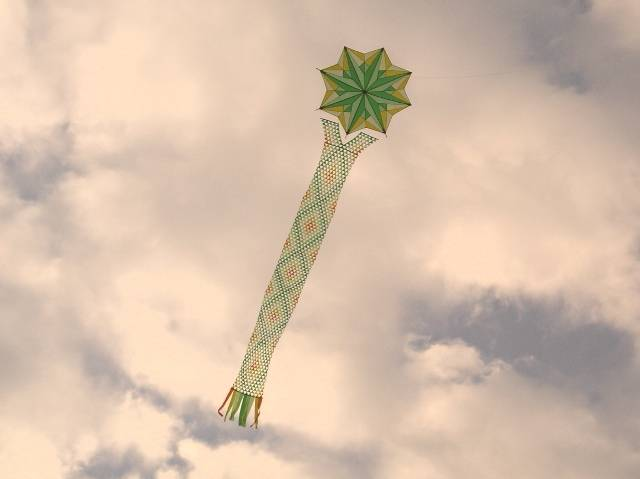
Les Mouchague ont monté la leur, avec une queue-tapis de 1300 morceaux assemblés ! Cassagnes avait dit qu'il faudrait doubler sa longueur, mais ils ont reculé et ça ne vole pas si mal !

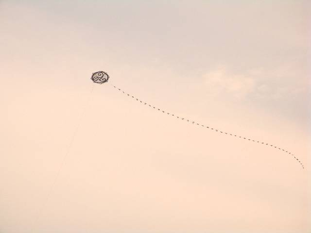
Yannick a sorti son Triskel. Mais il est bien difficile de voler avec une queue si longue et accrocheuse au milieu des autres avec un vent turbulent, et il connaîtra plusieurs chutes en piqué ! Dont une où son bridage sera coupé par un malhonnête qui vole avec du Kevlar, hou !

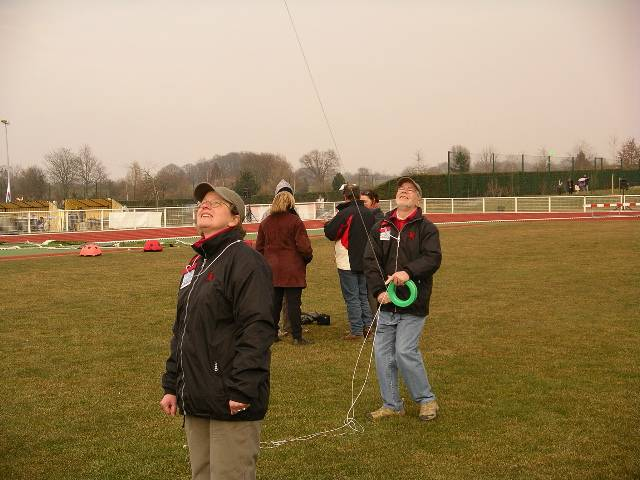
Les Mouchague surveillent leur étoile... et le Triskel qui s'en rapproche dangereusement !

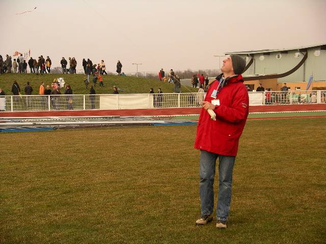
Et Yannick veille sur son Triskel... en guettant l'étoile des Mouchague qui vient le caresser amoureusement...

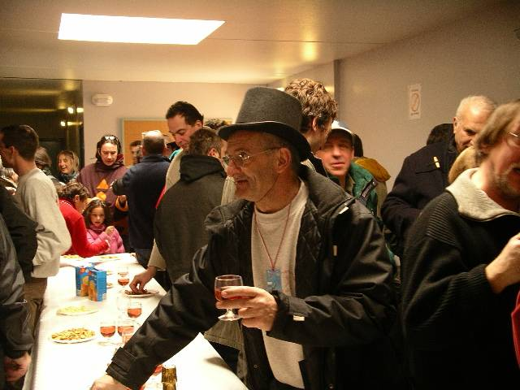
Le soir, un petit pot avant de passer à table. Tous les "Toiles Du Vent", hommes et femmes, se reconnaissent à leur chapeau...

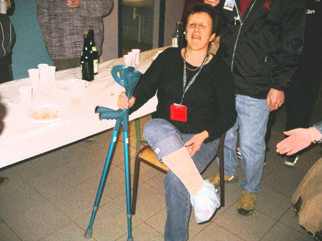
Jacqueline a marché sur un cerf-volant qui s'est méchamment vengé en la faisant glisser !

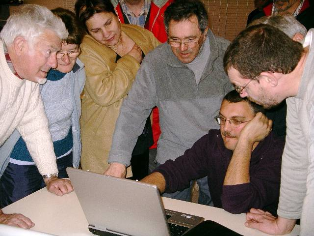
Ceux qui ont participé à l'atelier Ballons Solaires à Binas se le révisent, en particulier le pingouin de Joël.

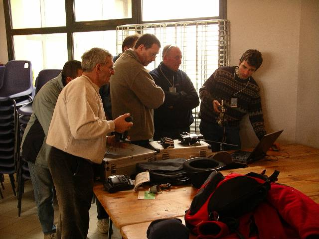
Les aérophotographes se font aussi leur petit séminaire à eux...

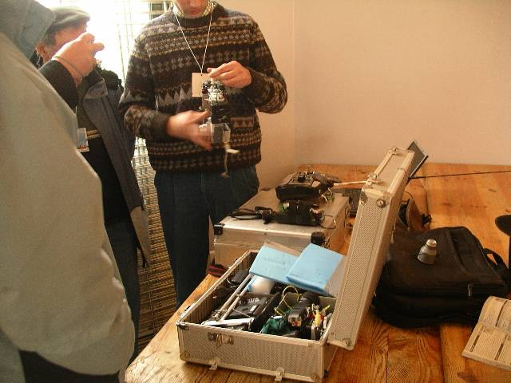
Ca, pour du matériel, y a du beau matériel ! Et ils savent s'en servir !

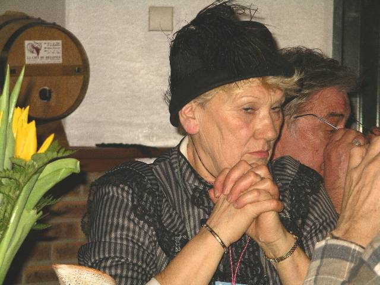
Josette s'est assise quelques secondes par hasard...

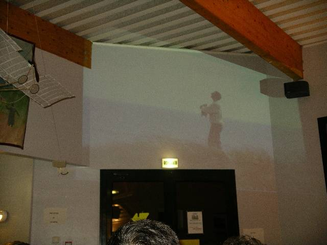
Pendant le repas, on reverra des photos ou des videos de naguère, ou de la journée ! Le dimanche midi, il y aura même une vue depuis une webcam montée sur un cerf-volant, on pourra manger tranquille en surveillant le terrain !

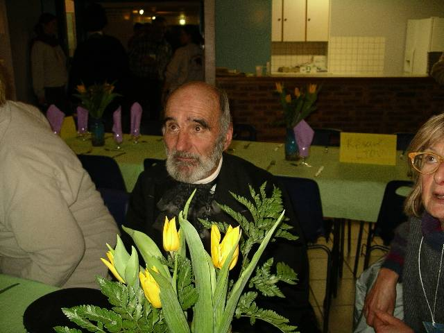
Gaby en grande tenue et madame surveillent tout ça d'un oeil de passionné !

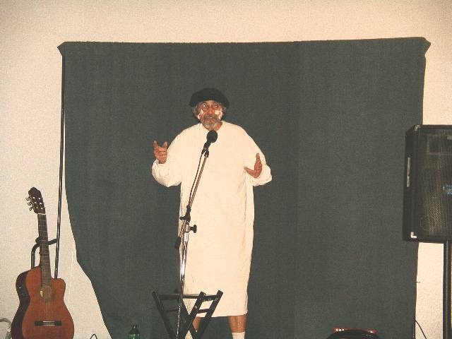
Entre la poire et le fromage, un fantaisiste sarthois viendra faire son numéro avec accent et déguisements, mais on a tant de choses à se dire dans la salle...

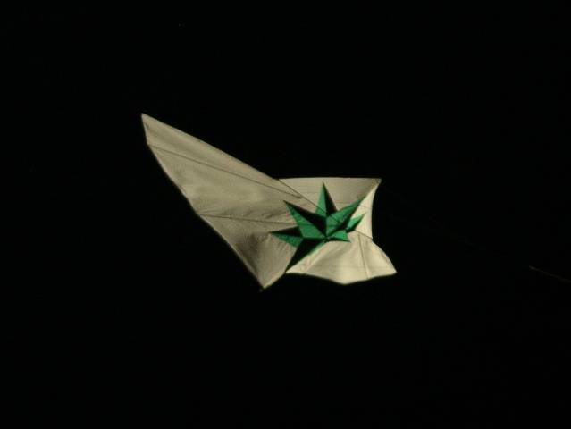
Après le repas, vol de nuit pour ceux qui veulent, grâce à l'éclairage puissant du stade (mais faut pas monter plus haut que les réverbères !). Il fait bien froid, et les volontaires ne se bousculent pas... Bruno a sorti son Jessica 14 dessiné spécialement pour le vol de nuit, François son Delta...

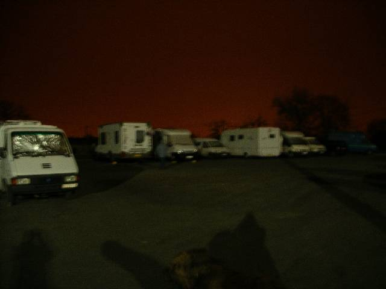
...mais il faut bien finir par aller se coucher...

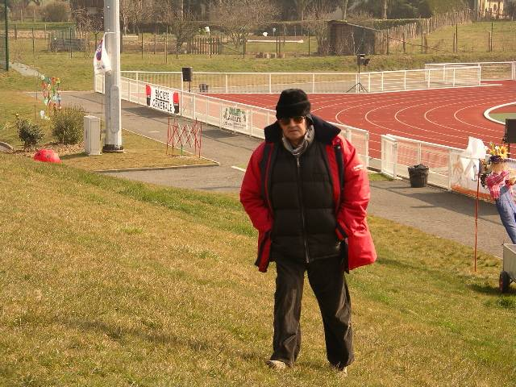
Au matin, je me lève, François est déjà en l'air et Fernando a monté ses cactus ! C'est vrai qu'il est bien couvert...

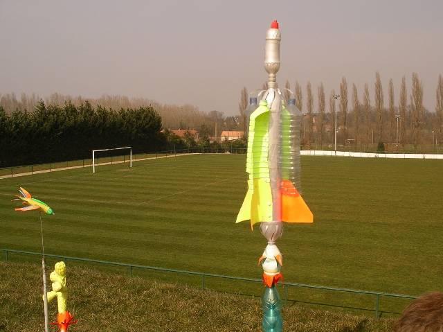
Il a encore amélioré sa végétation, avec ce "hot-dog" rotatif dont le bouton éclora sans doute un jour...

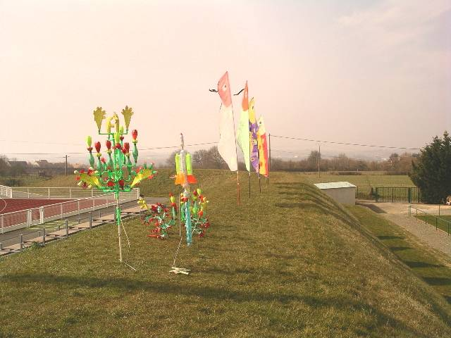
Il a ajouté beaucoup de fleurs d'un rouge éclatant. Mais il est limité car il faut d'abord boire le contenu des bouteilles pour en disposer...

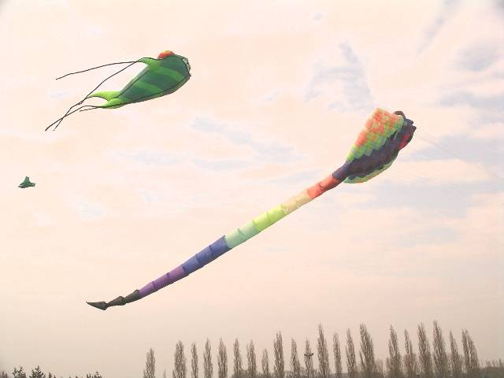
La bande Awita est arrivée et sort ses poids lourds sur le terrain du bas : poisson vert, raie...

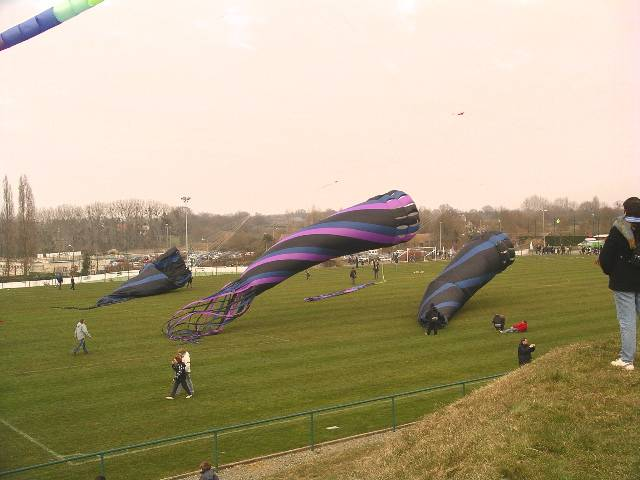
Et de nouvelles manches à air vraiment énormes, mais auxquelles il faut pas mal de vent...

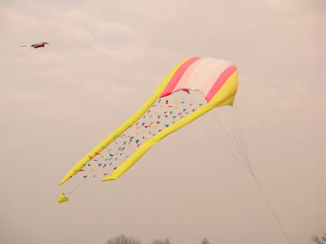
Patrick Guilbert a décollé son grand flow-form avec grand pavois entre les manches...

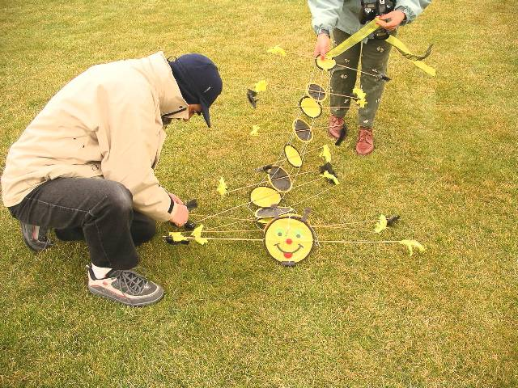
Emmanuel sort un hybride de Maïa l'abeille et de dragon. Mais le vent ne sera pas suffisant, dommage... Il a aussi un Jardin du Vt avec plein de petits chats dont les enfants refusent de partir...

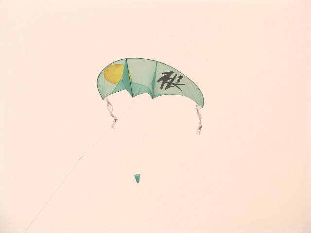
Vu aussi ce grand dérivé de Peter Lynn, mais monofil... Au fait, savez-vous que les canadiens les appellent des "monocordes" ?

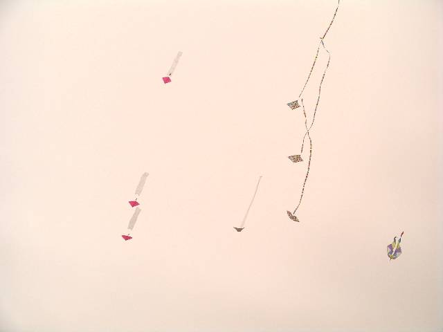
Non, ce n'est pas une patrouille d'avions qui passent à haute altitude, juste des cerfs-volants à longue queue...

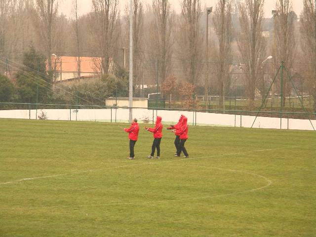
Le très bon team dont j'ai oublié le nom, pardon, s'entraîne et présentera de magnifiques shows...

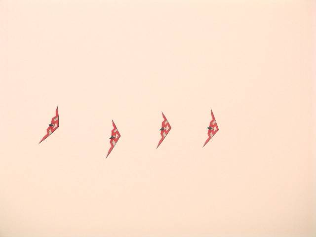
Les quatre Masques de l'Atelier, aux couleurs préférées du team, évoluent dans une formation plutôt serrée, gage d'une bonne maîtrise...

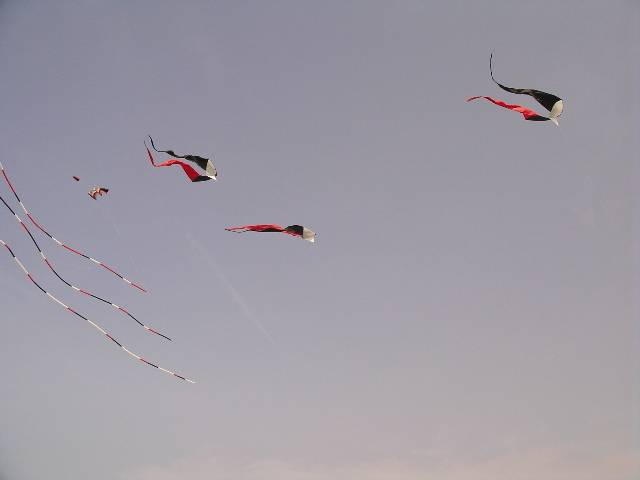
Ils ont aussi des monofils, toujours rouges/blancs/noirs...

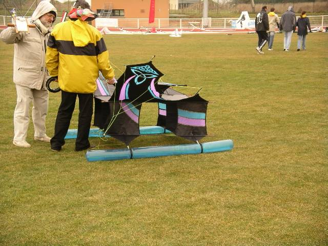
Claude a conçu ce Cody à flotteurs qui peut amerrir, ou atterrir d'ailleurs, sans problèmes

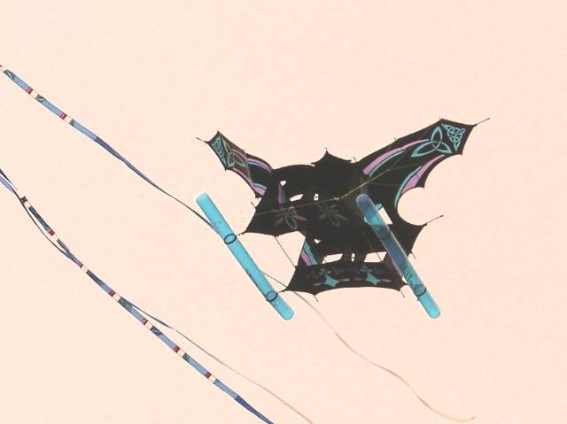
Et il vole très bien, juste un tout petit peu plus lourd...

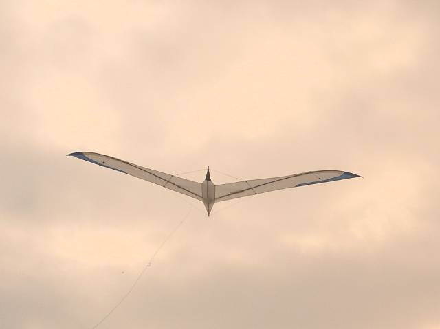
Et un Albatros ! Non, ce n'est pas le mien, mais celui de Jacques, reconnaissable à son nez et son croupion pointus et à sa grande stabilité...

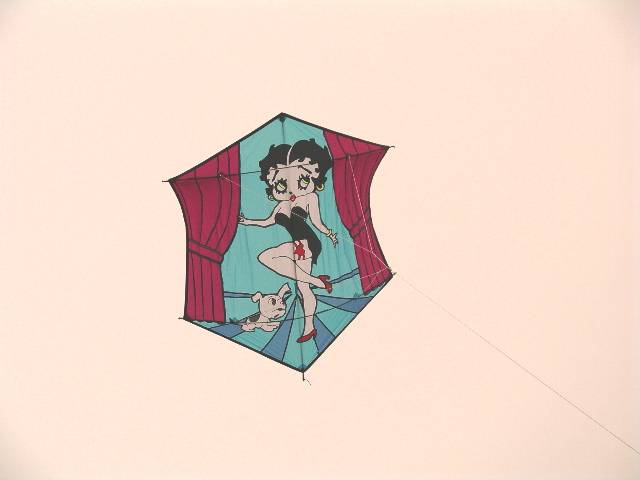
Betty Boop, de Gaëlle, toujours aussi sexy et légèrement vêtue (je parle de Betty) aguiche de là-haut...

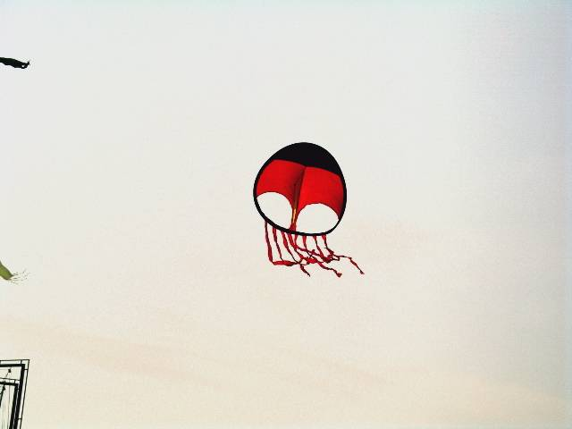
Ce cerf-volant rond original marie les trous du sled à un armature circulaire. Stabilité moyenne...

Il y a aussi des cellulaires de différentes formes classiques, boîtes, genre Pelly, etc.

Jean-Pierre, lui, fait voler son cellulaire courbe de belle facture et bien stable.

Dans les classiques un Conyne à caisson largement dimensionné.

Un cerf-volant récent, devenu lui aussi un classique : le Circoflex. En voici un bleu...

Et en voilà un rose pour faire la paire. Ils voleront très bien tous les deux... et le public se pose toujours des questions à leur sujet !

On revoit toujours avec plaisir le somptueux Diadème à l'architecture incompréhensible...

...mais splendide en vol, bien que sa fourchette de vent soit étroite ce qui rend les vols rares. Hé ben ça le fait désirer !

Guillaume a encore sorti son dragon d'or et d'argent. Après le long montage, voilà déjà la queue qui se lève. Mais c'est plutôt mauvais, elle se met à tourner... et le total retombe tout vrillé...

Et à chaque essai, 15 mn de démêlage et encore, avec l'aide de bénévoles admiratifs ! Pas rentable en coût/efficacité, Guillaume ! Faut que tu améliores la stabilité de la queue... après les multiples réparations !

Sylvien a sorti son Jessica 12 jaune adapté à ce vent assez fort. Il tire quelquefois un peu à droite à gauche quand le vent forcit, mais dans l'ensemble, il reste très stable.

Un pentagone décoré de signes : un bonhomme et une crevette dont j'ignore le sens. Inspiration australienne ?

Un court train, mais de grands Eddies arlequins fabriqués par Guillaume Nisin, l'auteur du Dragon métallique.

Michel a sorti plusieurs de ses grands poignards. La couleur est plus belle au naturel que sur la photo mais l'éclairage n'était pas fameux, désolé, pourtant j'ai essayé de bricoler...

Il y a même eu une hirondelle chinoise, mais assez grande, de l'ordre de 2 à 3 m !

Sur la base de la Sentinelle de Ramlal Tien, un poisson et des calmars colorés et bien sages.

Un Cody, c'est connu, mais la queue torse et tournante est intéressante.

En fin d'après-midi, je découvre tout loin... une cigogne. Pas pu aller voir de plus près, dommage !

Mais c'est quand même Jean-Claude qui aura le dernier mot, il ne redescendra son cerf-volant et son dauphin qu'une fois la nuit tombée ! Faut dire qu'il a été drôlement occupé à nous chouchouter, et avec son dos tordu, ça a dû être dur ! Repose-toi bien, Jean-Claude, comme Josette et toute l'équipe qui était sur les genoux : il commence à y avoir trop de monde pour l'effectif et ça devient difficile à gérer, dommage... Merci encore pour tout.